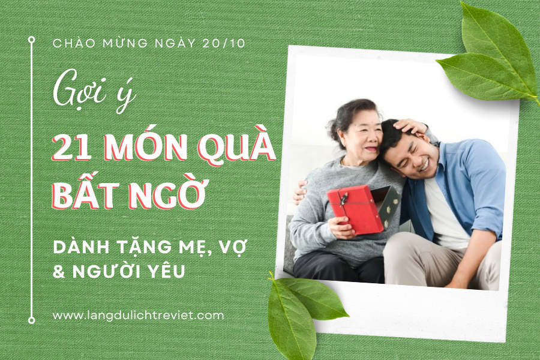

Bật mí 21 món quà 20/10 sẽ tạo bất ngờ cho mẹ, vợ, người yêu thân thương
17/10/2023
Ngày Phụ nữ Việt Nam 20-10 là một dịp tuyệt vời để chúng ta dành tặng tới người phụ nữ mà mình yêu thương những món quà bằng tất cả sự quan tâm chân thành, trân trọng. Trong bài viết này, Funland - Tre Việt bật mí đến bạn những món quà 20/10 sẽ tạo bất ngờ cho mẹ, vợ, người yêu và bạn gái.

1. Quà 20/10 Cho Mẹ
1.1. Sản phẩm chăm sóc da, ngăn ngừa lão hóa

Từ giai đoạn trung niên trở đi, da bắt đầu trở lên lão hóa dần. Đặc biệt với người của thời đại trước là những người mẹ, thì quá trình này đến và trải qua nhanh hơn do không được chăm sóc da cẩn thận, và nhận nhiều ảnh hưởng tác động từ môi trường. Do đó, sản phẩm chăm sóc da, ngăn ngừa lão hóa, nhất định sẽ trở thành quà tặng 20/10 cho mẹ ý nghĩa và tuyệt vời nhất.
1.2. Thực phẩm chức năng

Bước qua độ tuổi trung niên, con người sẽ dần lão hóa, đặc biệt là người của thế hệ trước như mẹ, thì quá trình này có thể càng được đẩy nhanh. Vì thế, bạn có thể chọn thực phẩm chức năng như một món quà 20/10 cho mẹ vào ngày đặc biệt này.
Nhưng hãy đặc biệt lưu ý, thực phẩm chức năng hiện nay có tình trạng hàng giả, hàng không rõ nguồn gốc tràn lan. Do đó, bạn cần cẩn thận hơn trong khâu chọn lựa dòng sản phẩm này.
1.3. Khăn choàng cổ

Khăn quàng cổ là một món quà ý nghĩa và tinh tế để tặng cho mẹ ngày 20/10. Không chỉ giúp giữ ấm trong những ngày se lạnh, làm tôn lên vẻ đẹp và phong cách của người mang, mà chiếc khăn quàng cổ cũng sẽ là một lời nhắn gửi ấm áp và đầy ý nghĩa nhất trong dịp đặc biệt này.
1.4. Ốp lưng điện thoại

Ốp lưng điện thoại tuy là vật dụng có chút tầm thường, nhỏ bé. Nhưng đây chắc chắn sẽ là một trong những món quà 20/10 cho mẹ ý nghĩa nhất. Bởi mẹ chắc chắn sẽ rất vui khi mỗi ngày đều được nhìn thấy món quà mà bạn tặng.
Khi lựa chọn mua ốp lưng điện thoại, bạn nên tùy thuộc vào độ tuổi, sở thích, tính cách của mẹ, để chọn được món quà 20/10 một cách chính xác nhất nhé.
1.5. Hoa tươi

Dù thời đại có phát triển và thay đổi thế nào, thì hoa tươi luôn là một món quà 20/10 cho mẹ ý nghĩa, đẹp đẽ nhất. Chắc hẳn rằng, bất kì một người phụ nữ nào khi nhận được một đóa hoa tươi thắm, sẽ cảm thấy rất vui mừng, hạnh phúc bởi hương sắc và vẻ đẹp lung linh mà các bông hoa đem lại.
1.6. Đồ dùng nhà bếp

Phần lớn phụ nữ, đặc biệt là những người mẹ luôn yêu thích khoảnh khắc nấu nướng trong không gian bếp ấm cúng của ngôi nhà mình. Sẽ thật bất ngờ, nếu bạn tặng mẹ món quà 20/10 đầy ý nghĩa này. Chắc hẳn, mỗi bữa cơm của gia đình bạn sẽ trở nên ngon và tràn đầy cảm xúc.
1.7. Chuyến du lịch ngắn ngày - Khu du lịch sinh thái Funland - Tre Việt
Khu du lịch sinh thái Funland - Tre Việt chính là sự lựa chọn lý tưởng trong danh sách những món quà 20/10 tặng mẹ. Còn gì bất ngờ và ý nghĩa hơn, khi dành tặng cho mẹ, chính là một chuyến du lịch sinh thái nghỉ dưỡng, tại thiên đường miền sông nước Nam Bộ. Đây cũng chính là thời gian để bạn có thể diễn tả lời yêu thương khó nói thành lời với mẹ của mình.

Du khách tới đây nghỉ dưỡng, có thể trải nghiệm hệ sinh thái bao gồm khu vui chơi nước, sân cỏ, sân cát,… tổng diện tích lên đến 5 ha. Ngoài ra, bạn cùng người thân có thể cùng nhau chèo thuyền kayak, thuyền SUP,... thưởng thức cảnh vật thiên nhiên, mộc mạc và trữ tình nơi đây.

Với dịch vụ, không gian sinh thái đặc sắc, nhưng khu du lịch sinh thái Funland - Tre Việt có giá vé chỉ từ 100.000VNĐ/trẻ em - 150.000 VNĐ/người lớn , đặc biệt, trẻ em dưới 0.9m và người cao tuổi (trên 80 tuổi) hoàn toàn được miễn phí tại đây.
Không cần phải những món quà lộng lẫy, xa hoa, đắt đỏ, khu du lịch sinh thái Funland - Tre Việt hứa hẹn sẽ trở thành một món quà 20/10 bất ngờ và ý nghĩa nhất để dành tặng đến mẹ và người thân trong dịp này.
Xem chi tiết về dịch vụ nghỉ dưỡng của Funland - Tre Việt tại đây.
2. Quà 20/10 Cho Vợ
2.1. Nước hoa

Nếu bạn còn loay hoay, đắn đo chưa biết chọn quà 20/10 cho vợ, cho người yêu, thì nước hoa sẽ là một sự lựa chọn tinh tế và đầy ý nghĩa. Hiện nay, trên thị trường có rất nhiều tổ chức bán nước hoa giá rẻ, không rõ nguồn gốc. Do đó, bạn nên chọn một chai nước hoa của một thương hiệu uy tín, tránh gây kích ứng da, hỏng quần áo,... nhé.
2.2. Phụ kiện trang sức

Có một điểm chung là bất kỳ người phụ nữ nào đều thích trở lên xinh đẹp, rạng ngời. Và trang sức chính là món quà 20/10 hết sức tinh tế, ý nghĩa, có thể giúp phái nữ thực hiện điều ấy. Vậy bạn còn chần chờ gì nữa, mà không chọn ngay cho vợ, hay người yêu của mình một chiếc bông tai, vòng cổ nhỉ?
2.3. Bữa ăn ấm áp

Nếu nước hoa, trang sức là những món đồ xa xỉ, thì một bữa ăn ấm áp, một mâm cơm ấm cúng chính là món quà 20/10 cho vợ hoàn hảo. Đôi khi, chính những khoảnh khắc, phút giây vui vẻ, ấm áp và hạnh phúc mới là thứ đắt giá nhất. Nhân ngày Phụ nữ Việt Nam 20/10, hãy lên ngay thực đơn và chuẩn bị vào bếp để trổ tài nấu nướng, tạo bất ngờ cho “một nửa thế giới” của mình nhé.
2.4. Giày dép

Chắc hẳn, bạn đã có cả danh sách về size giày, size quần áo của vợ, người yêu cho những ngày đặc biệt phải không? Vậy thì mua những đôi giày cao gót, hay chỉ đơn giản là chiếc dép làm quà 20/10, chắc hẳn sẽ gây bất ngờ cho họ.
2.5. Bóp ví cầm tay

“Giàu vì bạn, sang vì vợ” - Bóp ví cầm tay không những sẽ là một món quà nhân ngày Phụ nữ Việt Nam tâm lý, tinh tế, mà còn nâng tầm “nóc nhà” và chính bạn. Bạn cũng cần lưu ý về kích cỡ để có thể cầm vừa tay, cân xứng với vóc dáng vợ, người yêu.
2.6. Đồng hồ đeo tay

Đồng hồ đeo tay, không những là một phụ kiện để theo dõi thời gian, mà còn được sử dụng như một món trang sức. Chọn lựa một chiếc đồng hồ nhỏ nhắn đeo tay làm quà 20/10 sẽ giúp nửa kia dễ dàng kết nối giữa công việc và cuộc sống, sắp xếp thời gian một cách hợp lý nhất.
3. Quà 20/10 cho người yêu
3.1. Son môi

Son môi thực sự chính là một món quà ý nghĩa, được rất nhiều người mua dành tặng người yêu vào dịp 20/10 này. Nhưng hiện nay, có rất nhiều dòng son môi được bán tràn lan trên thị trường, vì vậy bạn hãy tìm mua một thỏi son từ các thương hiệu uy tín và lựa chọn màu son sao cho phù hợp để rung động “nửa kia” của bạn nhé.
3.2. Gấu bông

Bất kỳ chị em phụ nữ nào đều sẽ rung động trước vẻ đáng yêu, “mập mạp” của món quà này. Một chú gấu bông ngộ nghĩnh, dễ thương hứa hẹn sẽ là một món quà tặng 20/10 khiến cô ấy hạnh phúc và bất ngờ.
3.3. Bó hoa bánh kẹo

Nếu bạn còn đang đắn đo trong việc lựa chọn quà tặng 20/10 cho người yêu, thì một bó hoa ngập tràn bánh kẹo, đồ ăn chắc chắn làm cô ấy vui vẻ cười híp mắt. Với những cô nàng có tâm hồn ăn uống thì đây hẳn sẽ làm một món quà ý nghĩa nhất.
3.4. Bữa tối lãng mạn

Nhân dịp đặc biệt 20/10 này, bạn có thể cùng ngồi bên ánh nến, hoa hồng thưởng thức bữa ăn tối nhẹ nhàng cùng người yêu. Hãy chọn những nhà hàng đã có kinh nghiệm tổ chức những bữa tối như vậy nhé, chắc chắn họ sẽ mang lại cho bạn cùng cô ấy sự bất ngờ, hạnh phúc bởi một không gian lãng mạn, ấm áp.
3.5. Đồ handmade tự tay làm

Trong muôn vàn danh sách quà tặng 20/10, đồ handmade do chính mình làm ra sẽ là món quà ý nghĩa nhất. Không phải ai cũng sẵn sàng dành tâm huyết, và thời gian để tự tay ngồi mò mẫm chuẩn bị món quà cho “nửa kia”. Vì thế, cô ấy chắc chắn sẽ rất bất ngờ và hạnh phúc khi nhận được món quà này.
3.6. Bánh kem

Cùng người ấy ăn một chiếc bánh kem chính sẽ đem lại kỉ niệm đẹp đẽ, phút giây lãng mạn khó quên. Có rất nhiều loại bánh kem, cùng đa dạng hương vị như: bánh tiramisu, bánh gato truyền thống, bánh kem lạnh, bánh cheese cake,... tùy ý cho bạn lựa chọn.
3.7. Một buổi mua sắm

Một buổi đi mua sắm cùng cô ấy cũng là một ý tưởng không tồi cho quà tặng 20/10. Bất kì cô nàng nào, đều ưa thích cảm giác được đi shopping mua sắm cùng người yêu nên đây sẽ là một dịp hết sức thích hợp để dành tặng “nóc nhà” món quà này.
3.8. Áo đôi

Bạn sẽ có cơ hội thể hiện tình cảm, sự quan tâm của mình qua món quà 20/10 độc đáo này. Đặc biệt hơn, khi đó là chiếc áo được in riêng dành cho bạn cùng cô ấy. Tùy vào thời tiết, khí hậu, hãy chọn cho bạn cùng cô ấy những chiếc áo phù hợp nhé!
Trên đây, Funland - Tre Việt đã bật mí danh sách 21 món quà 20/10 sẽ tạo bất ngờ cho những người mẹ, vợ, người yêu thân thương. Dù có là món quà nào thì chúng đều có giá trị xa xỉ về vật chất hay tinh thần, đó đều là những món quà thể hiện tâm ý, tình cảm mà bạn dành cho đối phương. Chúc bạn chọn lựa được món quà ý nghĩa, phù hợp nhé!